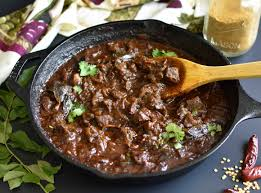

Back to main page
Beef Curry

Indian beef curry. Succulent meat and aromatic spices combine to create the ultimate curry full of flavor and deliciousness. Bring on the cooler weather with a comforting bowl of this curry served with fragrant rice. Clearly, the best way to showcase the unique taste of an authentic curry
Ingredients
- Coconut oil
- Black mustard seeds
- Fennel seeds
- Curry leaves
- Onion
- Black pepper
- Garlic
- tomato paste
- green chillies
- fresh ginger
- Turmeric
- Kashmiri chilli powder
- Ground coriander
- Garam masala
- Tamarind
- Beef
- Tomatoes
Instructions
- Grease the inside of your slow cooker with cooking spray.
- With your pan over a medium heat, add the coconut oil. When it’s nice and hot, add the mustard seeds, fennel seeds and curry leaves.
- As the mustard seeds start to pop, add the diced onion and salt. Cook until the onion has softened – about 5 to 10 minutes.
- Add the green chilli, garlic, ginger, the ground spices and tamarind. Cook through for a couple of minutes.
- Add the chuck steak pieces and coat with the spicy onion mixture. Cook for 5 minutes, stirring occasionally.
- Transfer to the slow cooker.
- Add tomatoes and 125 ml water and stir.
- Cook on low setting for 8 hours or on high setting for 4 hours. If you want a thicker consistency of curry, cook on high for 30 minutes with the lid off at the end of cooking.